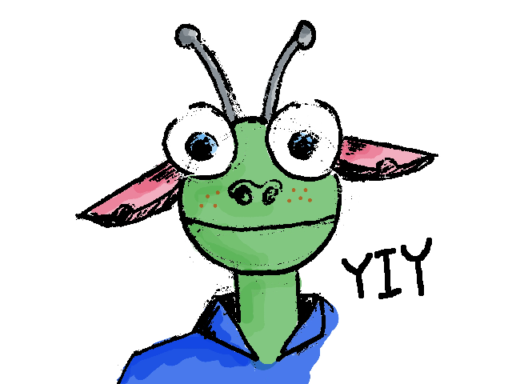

Yi Yao
Postdoc at UNC-Chapel Hill Visiting Scholar at Duke
Computational Physical Chemistry
Email: yaoyi92 AT gmail DOT com
My CV pdf
I have my research posted in this website.
Also, some computational tutorials and scripts are posted. I wrote them mainly to avoid rewriting scripts again and again. Email me for any question about them.